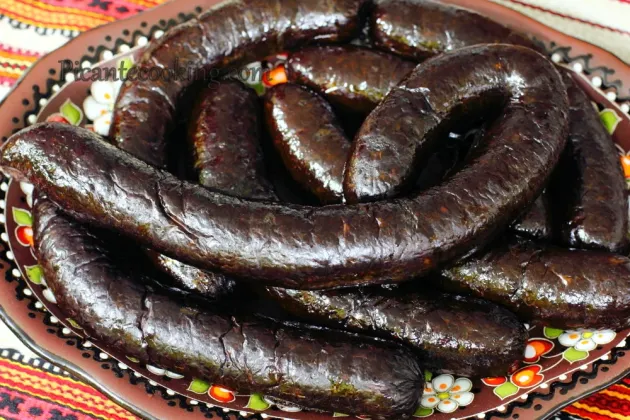

УКРАЇНСЬКА КРОВ'ЯНКА

Інгредієнти:
- 1 кг свинячої печінки, крупно порізати
- 1 кг черевного сала (з прошарком м'яса), порізати кубиками
- 500 грам жирної свинячої шиї, порізати кубиками
- 1 кг цибулі, почистити, порізати кубиками
- 1, 2 кг картоплі, почистити
- 1 л свинячої крові
- 250 мл вершків 30%
- 3 яйця
- 70 грам солі
- 2 ч.л. чорного меленого перцю
- Чищені свинячі кишки 6-8 метрів (але краще мати принаймні 10 м на випадок розривів і тріщин)
Приготування:
- Розігріти духовку до 180 ° С.
- Тим часом помістити промиту гречку в казанок або каструлю з кришкою, яку можна поставити в духовку. Залити крупу доверху водою, так щоб вода була над гречкою на половину товщини пальця. Додати 1 ч.л. солі і вершкове масло. Довести до кипіння, накрити кришкою, зняти з вогню, вставити в розігріту духовку і вимкнути. Залишити у вимкненій духовці до охолодження. Вистиглу кашу добре перемішати для того щоб розпушити.
- У суху, холодну, глибоку сковороду або казанок, або у велику каструлю, на худий кінець, помістити сало і свинячу шию.
- Поставити на середній вогонь і томити близько 40-50 хвилин, поки шкварки добре не підрум'яняться і витопиться велика кількість жиру.
- Додати цибулю і томити до м'якості. Зняти з вогню і залишити до охолодження.
- Свинячу печінку відварити до готовності на середньому вогні, в підсоленій воді. Відцідити і залишити до охолодження.
Другий день:
- Гречку перекласти у велику миску або каструлю (так на літрів 10 щоб було зручно мішати).
- Шкварки з цибулею злегка підігріти, тільки щоб жир розплавився і відразу ж перекласти до гречки.
- Свинячу печінку змолоти на м'ясорубці.Перекласти до гречки.
- Кров збити в блендері (щоб грудок не було) і перелити до гречки зі шкварками.
- Картоплю натерти на дрібній тертці або подрібнити у блендері і перекласти до решти інгредієнтів. Відразу ж перемішати.
- Збити яйця з вершками і влити туди ж. Додати сіль і чорний мелений перець. Добре все перемішати.
- Підготовлені кишки наповнити начинкою за допомогою спеціальної ковбасної насадки на м'ясорубку, а ще простіше, за допомогою лійки зробленої з пластикової пляшки. (Читайте вище в передмові)
- Наповнені кишки викласти на деко в один шар.Можна запікати до готовності в духовці розігрітій до 180 ° С. До витікання прозорого соку при проколюванні, близько 30 хвилин. (Більш традиційний спосіб) А можна варити у великій кількості води партіями, також до витікання прозорого соку, близько 20 хвилин після повторного закипання. Але варити треба на самому повільному вогні, вода повинна лише легенько побулькувати. Перед подачею таку кров'янку слід обсмажити, хоч в холодному вигляді вона також смачна і навіть соковитіша. (Після охолодження можна партіями заморозити. Разморожувати кров'янку на полиці в холодильнику)
- Який спосіб обробки ви б не вибрали, і в одному і в іншому випадку перед самим початком термічної обробки слід акуратно проколоти кишки в декількох місцях голкою.
Зберігати готову кров'яну ковбасу не більш 4-5 днів в холодильнику і до 3-х місяців у морозильній камері.
- В Україні подають кров'яну ковбасу з гострою гірчицею, хроном і часто з підрум'яненою цибулею. Через наявність в кров'яний ковбасі крупи і картоплі, це самостійна страва, яке не вимагає гарніру, хіба що легкого сільського салату з капусти або салату з буряка з квашеними огірками.
- Смачного!